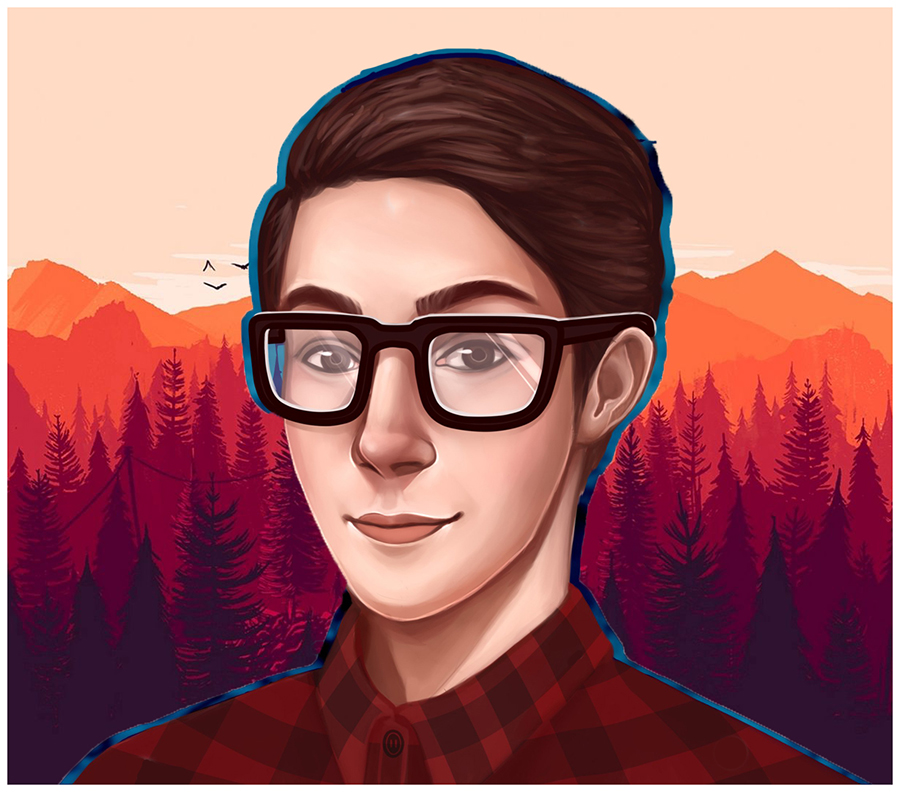

Меня зовут Ерошенков Игорь (Andrew Wright после окончания института). Мне 18 лет.
Я занимаюсь и работаю по направлению "Цифровой и Графический дизайн" уже не первый год. На данный момент я прохожу обучение
в институте "Бизнеса и Дизайна" для повышения своей квалификации, а также для получения официального диплома, подтверждающего
мои практические навыки в сфере дизайна и всего, что с ним связано.
Данная страница является галереей - портфолио лишь некоторых моих работ - Вы сможете увидеть большее в ближайшее время.
|

|